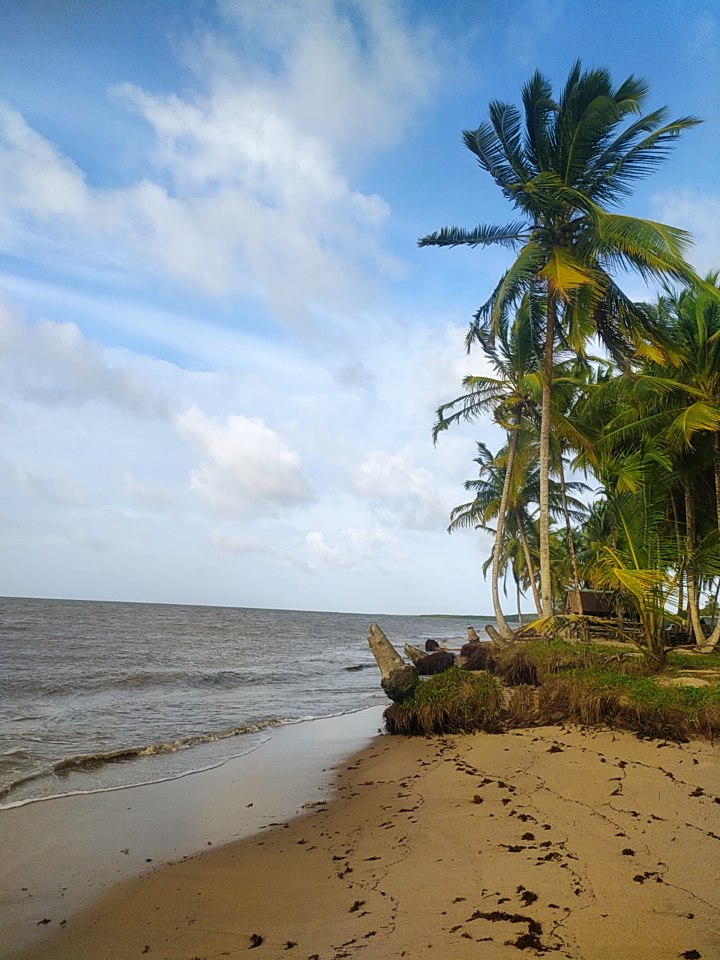
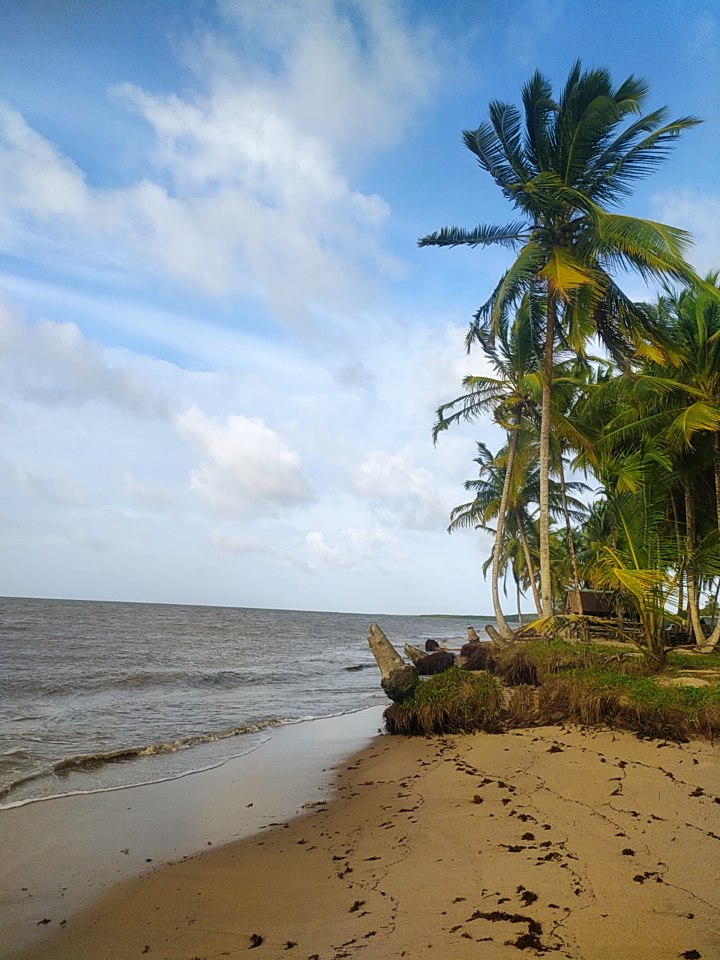

Saint-Laurent du Maroni
Des fois les femmes enceintes restent un mois à l’hôpital avant d’accoucher car elles habitent loin et autrement elles viennent et c’est trop tard. Ouvrir une route ça sert à rien. Ou il faudrait des gynécologues et médecins dans chaque village, mais c’est pas possible autrement le seule solution réaliste c’est faire des maisons qui accueillent les femmes enceintes gratuitement à côté de l’hôpital pour ne pas occuper des lits pour rien.
Le quartier de Charbo a énormément changé. Avant, c'était des maisons sur pilotis. Elles ont été détruites pour réaménager le quartier. Mais il reste beaucoup à faire pour que ce ne soit plus un bidonville.
Il n'y a pas assez de routes, toujours des embouteillages.
Il n'y a pas tant de transports, ça manque.
À Saint-Laurent, pas besoin de payer le transport pour faire des achats : les pirogues nous amènent gratuitement au Suriname.
Effectivement, les Haïtiens font du vaudou, les Bushinengués utilisent des plantes... C'est assez intrusif dans nos pratiques médicales.
Je me rappellerai toujours du magnifique manguier qui tombait sur la crique. C'est ce genre de paysage que j'aime.
On allait à l'abattis pour avoir à manger ! Je n'en ai plus aujourd'hui, ma mère est trop vieille et maintenant, c'est trop loin pour moi.
J'aime m'occuper de mon abattis : tu plantes, tu manges ! C'est de la nature !
Cette ville est un peu folle. La ville ressemble au far west, c'est une espèce de quadrillage, avec des gens qui trainent devant les bâtiments
On a appris à repérer les endroits sûrs, les gens te proposent des verres à la marina, ils te donnent des conseils, il y a le vent qui rafraichit
On évite aussi la forêt des malgaches, il y a eu un viol terrible là-bas
L'ambiance de Saint-Laurent, c'est les fêtes sur la promenade et au Point Couleur, demain, il y a salsa !
La confluence Estuarienne
Awala Yalimapo
Avant y'avait pas la route, on était plus tranquile, mais c'est bien aussi comme ça
Les Kalinà, on s'en fout pas des tortues, mais c'est banal pour nous. Maintenant, on a plus le droit de les chasser, avant c'est les Kalinà qui chassaient les tortues et qui les amenaient pour nourrir les bagnards.
On a réussi à voir plusieurs tortues, c'est étonnant pour nous et pour les enfants c'est des beaux souvenirs et un moyen de leur montrer les richesses de la nature.
Avant Awala c'était juste la plage mais avec la montée des eaux ça a reculé et on est plus nombreux.
Pour trouver les tortues il faut suivre les traces. Si y'en a qu'une, c'est bon mais si y'en a deux, c'est qu'elles sont déjà reparties.
On est venue du Suriname ici ça à l'air plus safe et un peu plus propre
J'oublie pas ma langue, je parlerai toujours le kalinà
 


Les clarières agricoles et habitées et les forêts littorales de l'ouest
Javouhey IracouboOn est sur des exploitations trop grandes qui pourraient être aussi productives sur moins de surface en améliorant les techniques.
Ça me fait mal à dire, mais ici ça ne change pas, il y a rien. Pour avoir une pharmacie c'est Sinnamary ou Cayenne.
On a la plus belle église de Guyane, c'est un bagnard qui l'a peint, y a toute une histoire ici, c'est du patrimoine.


Nous on connaît pas, on passe juste ici, c'est une pause avant Saint Laurent.
Sur la route y'a plein de gens qui conduisent sans être en règle donc il y a plein de carcasses.
On est venu ici pour les papiers mais quand ils sont pas là il faut se rendre jusqu'à Cayenne ou Kourou.
On observe une dégradation ou une stagnation des rendements malgré une emprise foncière constante, ce qui interroge la durabilité et l'efficacité des pratiques agricoles locales.
L'agriculture devient secondaire pour certains, au profit de logiques opportunistes de revenus à court terme. Cela nuit à une vision durable du développement agricole. il y a la défiscalisation et les agriculteurs gagnent plus en défiscalisant qu'en produisant.
Il y a une forte communauté Hmong à Javouhey avec des pratiques communautaires : transmission familiale du foncier, et entraide administrative.
C'est une commune très connue grâce au couac. C'est là où il y a le meilleur couac : le grand couac.
Le littoral de l'Amana
ManaIci les vieilles maisons partent en lambeaux, on perd ce patrimoine, mais il en reste certaines qui sont encore en torchis.
C'étaient des maisons individuelles avant. Maintenant y'a plus d'intimité, y'a du monde qui cherchent des logements.


C'est la débrouille ici, pas d'électricité, pas d'eau, pas de ramassage des déchets et défaut du ramassage scolaire.
Les oiseaux amènent de nouveaux parasites sur les manguiers. Il y en a plus, car quand on était jeune, on les chassait, mais c'est interdit maintenant.
Les rizières, c'était subventionné par l'État et la mer a monté. Aujourd'hui, je pense pas que ça reprendra et les écoles d'agriculture, c'est plutôt élevage.
Ici, c'est calme.
Je me suis fait agresser à Saint-Laurent par deux surinamais armés, heureusement qu'une patrouille est intervenue.